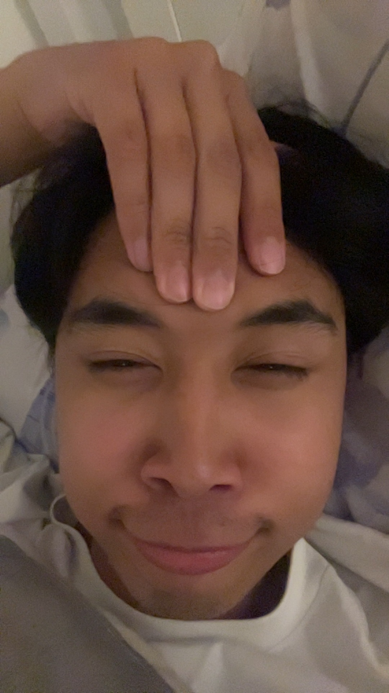

Day 22

I really love you lol thats so weird
Today, I would like to recount a memorable moment we’ve shared using Shakespearean English
T wast a by fate day at which hour i hath asked if 't be true t wast well enow to dye mine own hair at thy house. We didst t in thy bathroom and i satteth on thy toilet. I wast w'rri'd if 't be true i wast intruding but i bethought t wast very much excit'ment. We w're playing classical piano music and i rec'rd'd t on mine own phoneth. Aft'rwards, mine own hair wast practically black. I actually very much did like t. Thee shouldst beest a hairdress'r. Then, we w're hugging on thy sleep chamber. I wast very much n'rvous to beest honest. I eke very much did like thee so i ign'r'd mine own n'rves and hath asked thee how to kisseth. So no more brain than stone but it’s well enow it’s quaint comical. I can confirm i knoweth how to kisseth now…
or
It was a random day when I asked if it was okay to dye my hair at your house. We did it in your bathroom and I sat on your toilet. I was worried if I was intruding but I thought it was really fun. We were playing classical piano music and I recorded it on my phone. Afterwards, my hair was practically black. I actually really liked it. You should be a hairdresser. Then, we were hugging on your bed. I was really nervous to be honest. I also really liked you so I ignored my nerves and asked you how to kiss. So stupid but it’s okay it’s pretty funny. I can confirm I know how to kiss now…